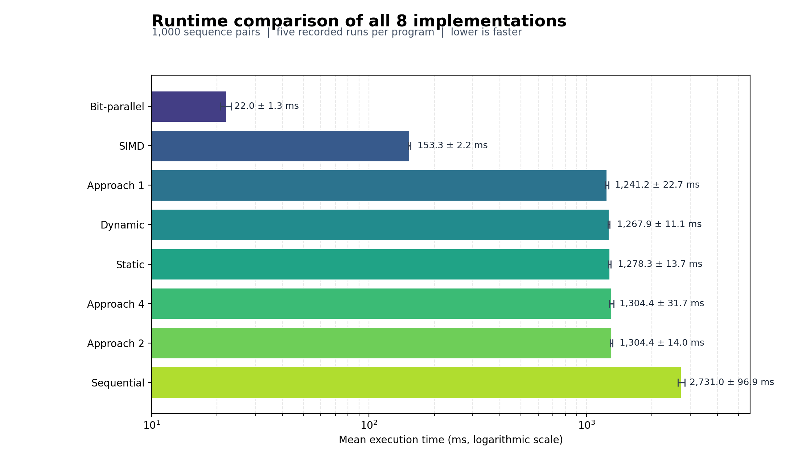

OpenMP · Sequence alignment
DNA comparison runtime benchmarks
Eight implementations compared using the recorded runtime for 1,000 sequence pairs. Bars show the mean of five runs; error bars show standard deviation. Lower runtime is faster.
